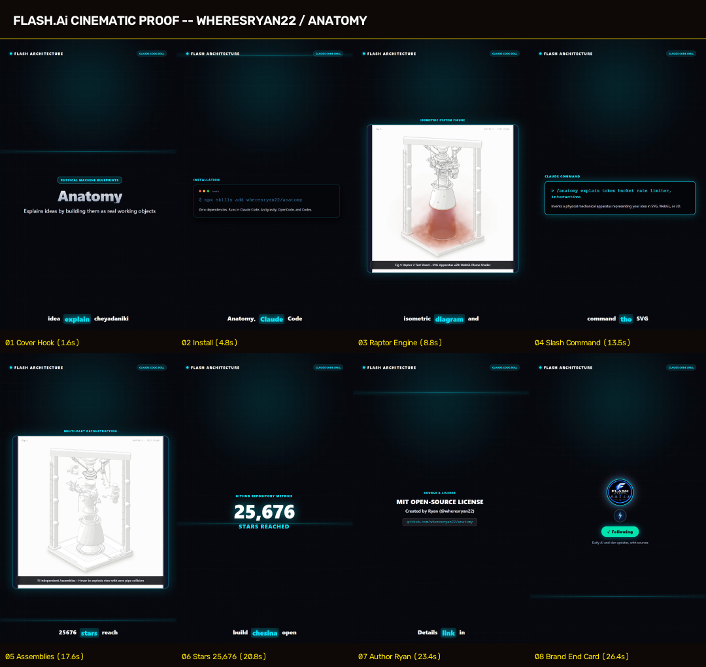

wheresryan22 / anatomy
Physical Machine Blueprint Generator & Claude Code Skill
Canonical Source: https://github.com/wheresryan22/anatomy
License & Attribution
wheresryan22 / anatomy · MIT License · Created by Ryan (@wheresryan22)
Exact Commands to Run
npx skills add wheresryan22/anatomy -g
/anatomy explain token bucket rate limiter, interactive
Grounded Evidence & Facts
- GitHub Stars: 25,676 (Verified via api.github.com/repos/wheresryan22/anatomy)
- Created Date: 08 Oct 2026 (29.0 days old, ≤ 30 days)
- Core Capability: A Claude skill that explains a technical idea by inventing a real, working physical object in SVG, WebGL, or 3D mode. Zero dependencies.
- Launch CLI:
npx skills add wheresryan22/anatomy inside terminal or agent session
- System Boundary: 100% open-source MIT license created by Ryan (@wheresryan22)
8-Beat Cinematic Proof Sheet
